Sputnik 1
Il 4 ottobre 1957 l'Unione Sovietica lanciò il primo satellite artificiale della storia. Sputnik 1 orbitò la Terra per tre mesi, segnando l'inizio dell'era spaziale e dando il via alla corsa allo spazio
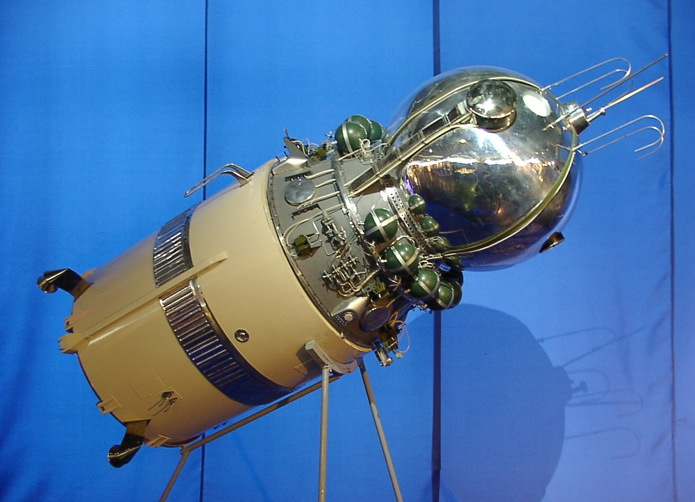
Vostok 1
Il 12 aprile 1961 Yuri Gagarin divenne il primo essere umano nello spazio, compiendo un'orbita completa attorno alla Terra in 108 minuti. Una data celebrata ancora oggi come Giornata dell'Astronautica
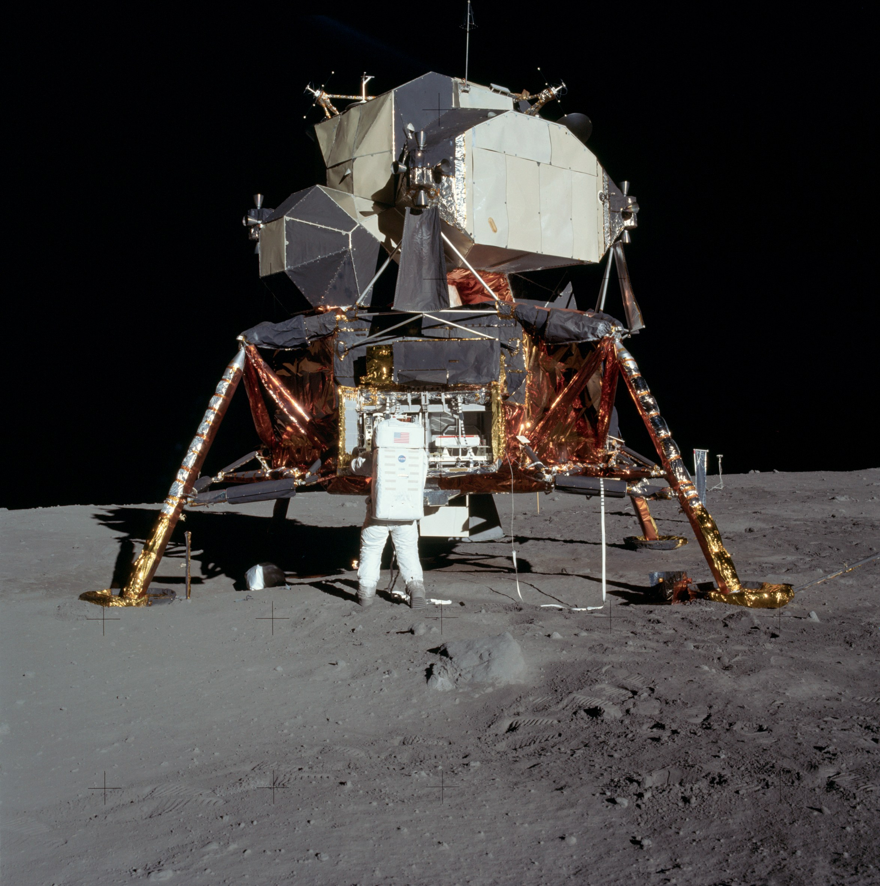
Apollo 11
Il 20 luglio 1969 Neil Armstrong e Buzz Aldrin toccarono per la prima volta il suolo lunare. Furono 12 gli astronauti a camminare sulla Luna nell'ambito del programma Apollo, tra il 1969 e il 1972
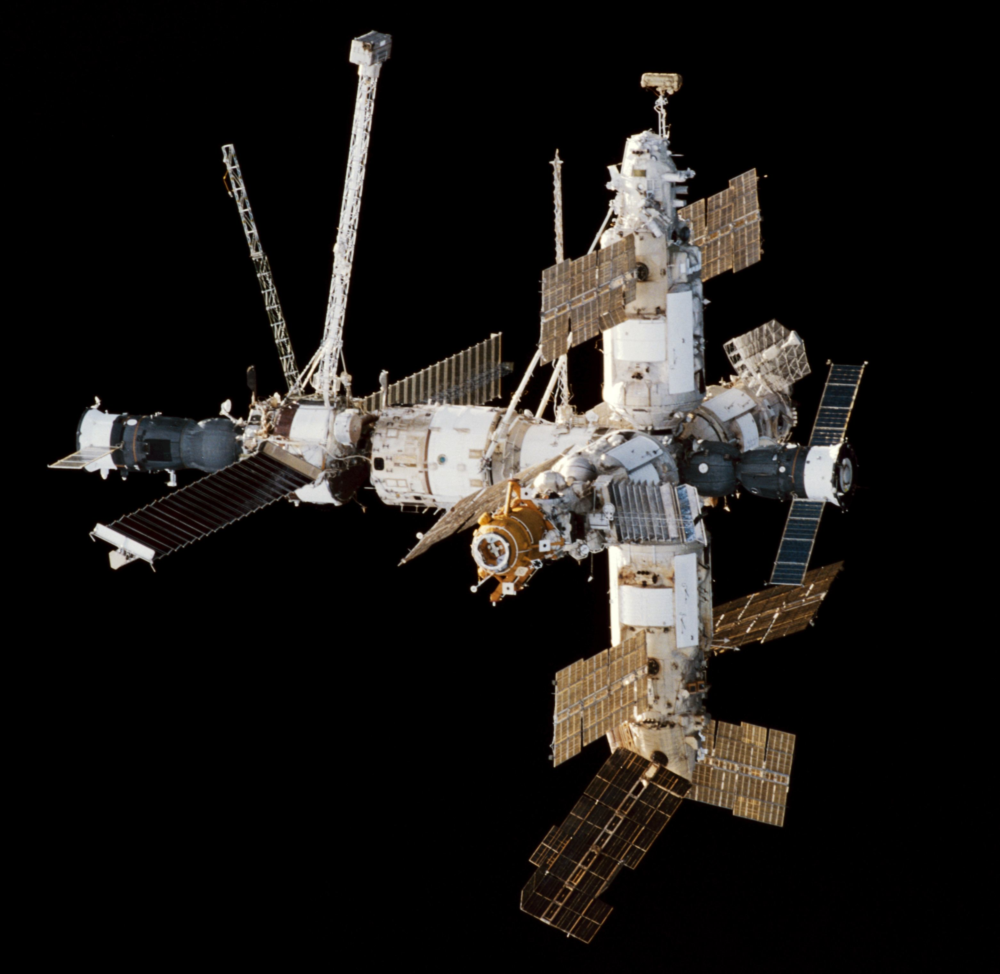
Stazione Mir
Mir fu la prima stazione spaziale modulare della storia, abitata quasi ininterrottamente dal 1986 al 2000. Ha ospitato astronauti di 12 nazioni diverse, dimostrando che la vita prolungata nello spazio è possibile
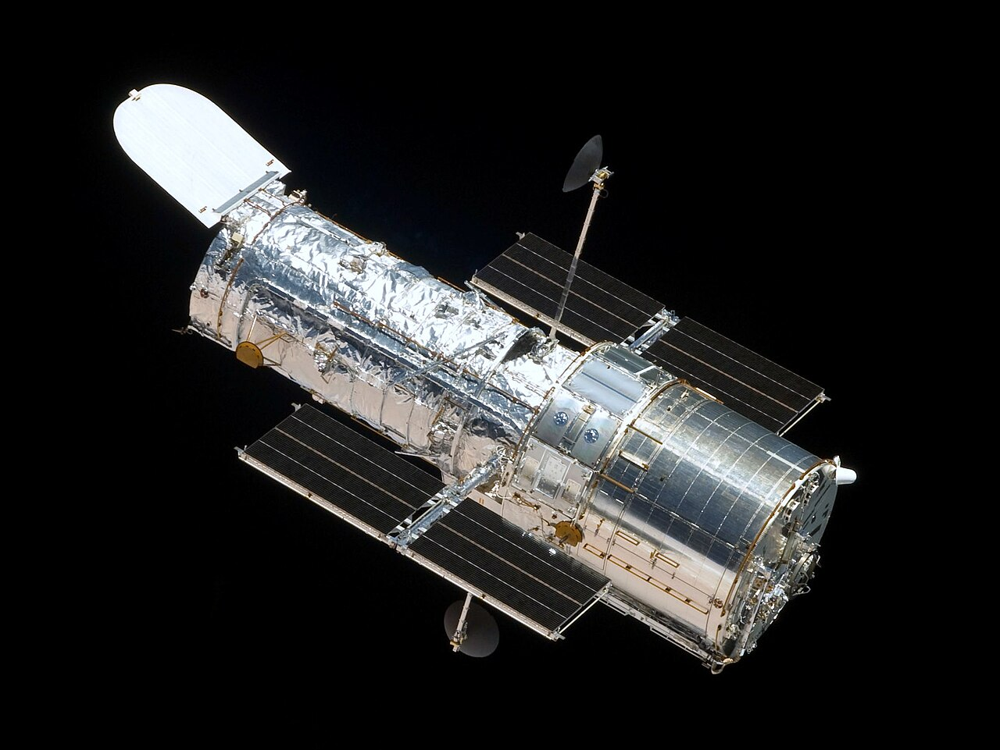
Hubble
Lanciato nel 1990 da una collaborazione NASA-ESA, il telescopio Hubble ha rivoluzionato l'astronomia con immagini di galassie lontane miliardi di anni luce, nebulose e misure dell'espansione dell'universo
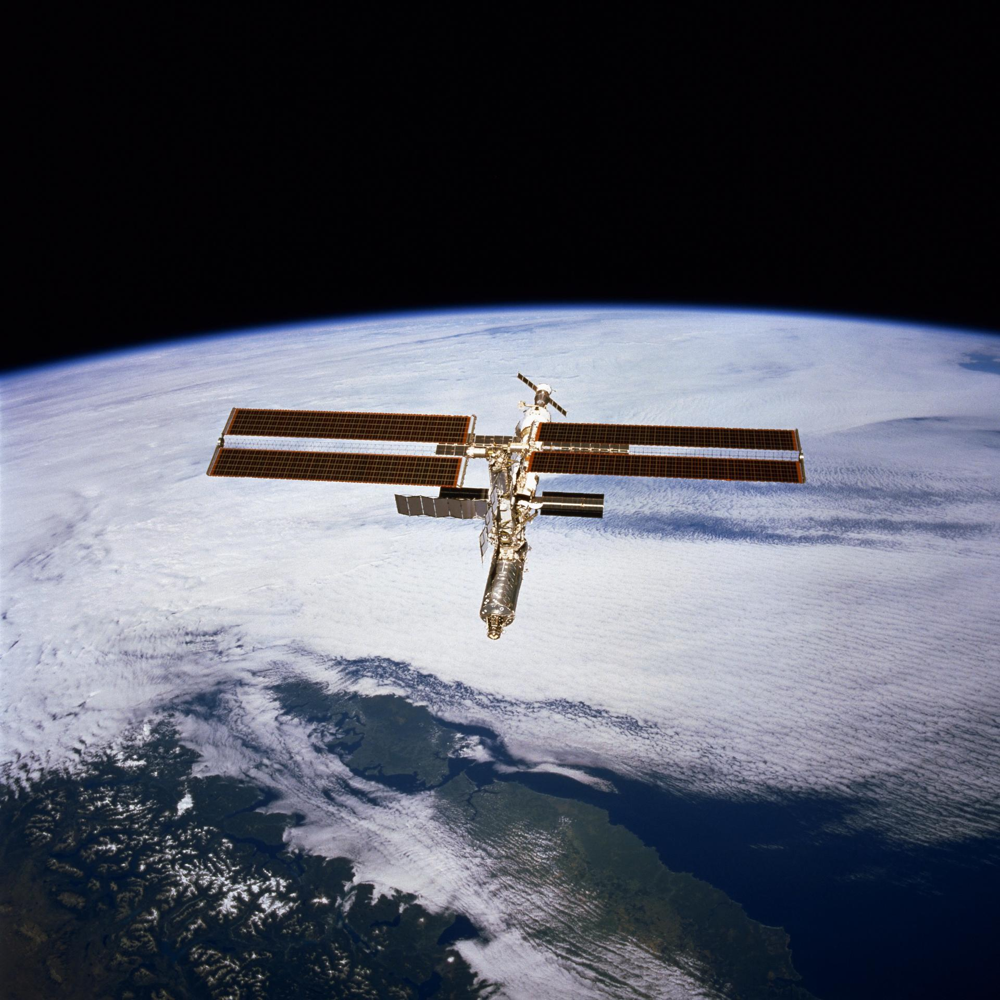
ISS
La Stazione Spaziale Internazionale è il progetto scientifico più costoso mai realizzato dall'umanità. Dal novembre 2000 ospita senza interruzione astronauti di tutto il mondo per ricerche in microgravità
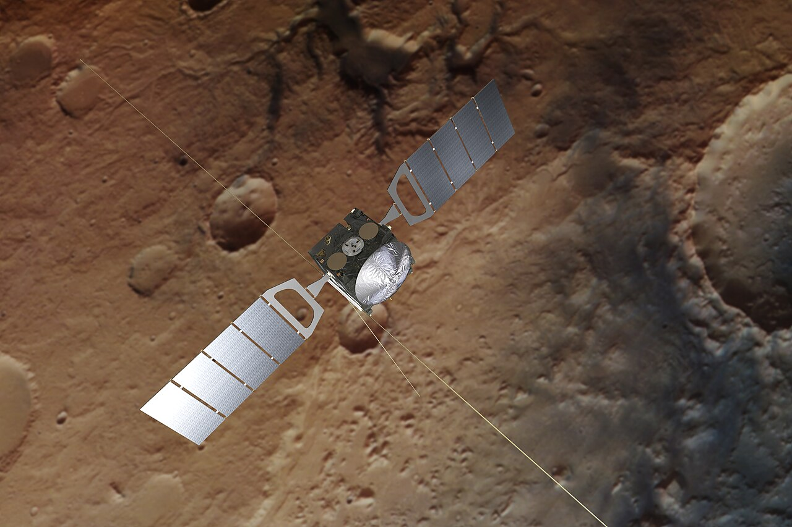
Mars Express
La prima missione europea verso Marte, ancora operativa dopo oltre vent'anni. Mars Express ha mappato la superficie, rilevato ghiaccio d'acqua sotto il polo sud marziano e studiato l'atmosfera del pianeta rosso
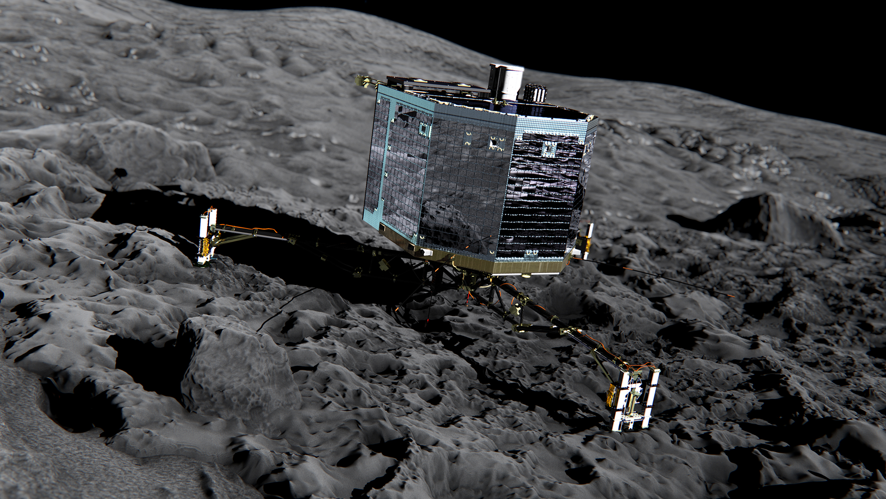
Rosetta
La sonda europea Rosetta ha viaggiato per dieci anni fino alla cometa 67P/Churyumov-Gerasimenko. Nel novembre 2014 il lander Philae toccò la superficie della cometa: il primo atterraggio su un corpo cometario della storia
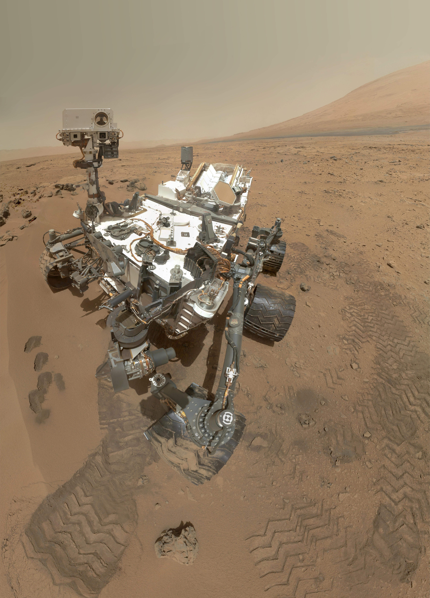
Curiosity
Atterrato nel cratere Gale nel 2012, Curiosity ha confermato la presenza passata di acqua liquida su Marte e rilevato composti organici nel suolo. È ancora operativo dopo oltre 12 anni di attività scientifica
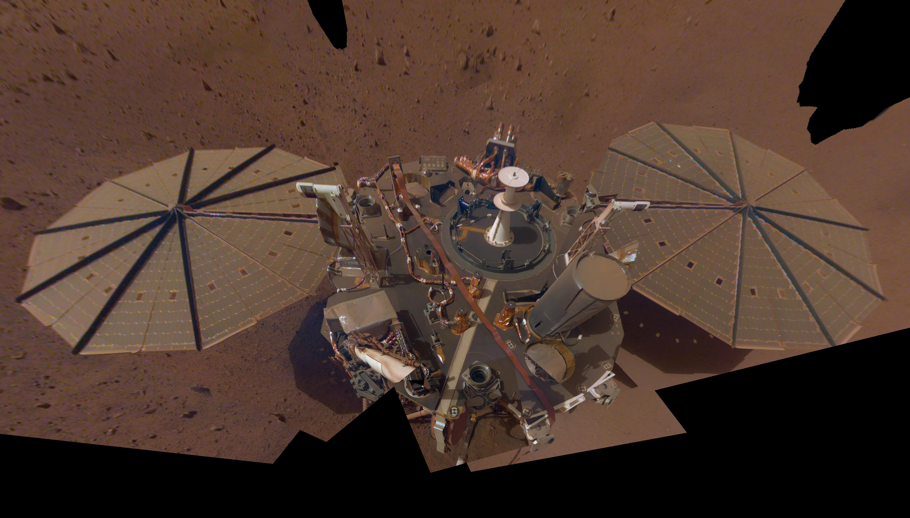
Chang'e 4
Il 3 gennaio 2019 la sonda cinese Chang'e 4 è atterrata sul lato nascosto della Luna, per la prima volta nella storia. Il rover Yutu-2 analizza ancora oggi il terreno di questa regione mai esplorata da vicino
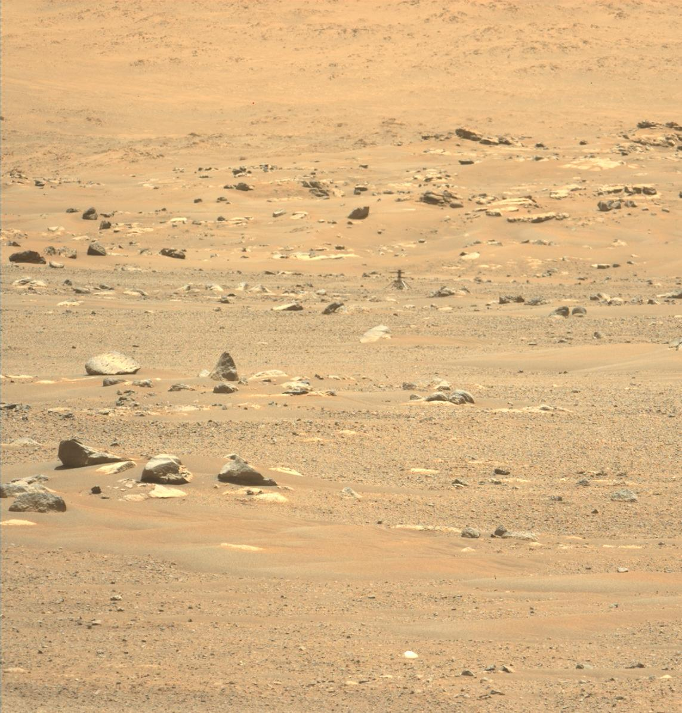
Tianwen-1
Con una sola missione la Cina ha inserito in orbita un satellite, fatto atterrare un lander e dispiegato il rover Zhurong su Marte. Un risultato tecnico riuscito solo a pochi Paesi nel mondo
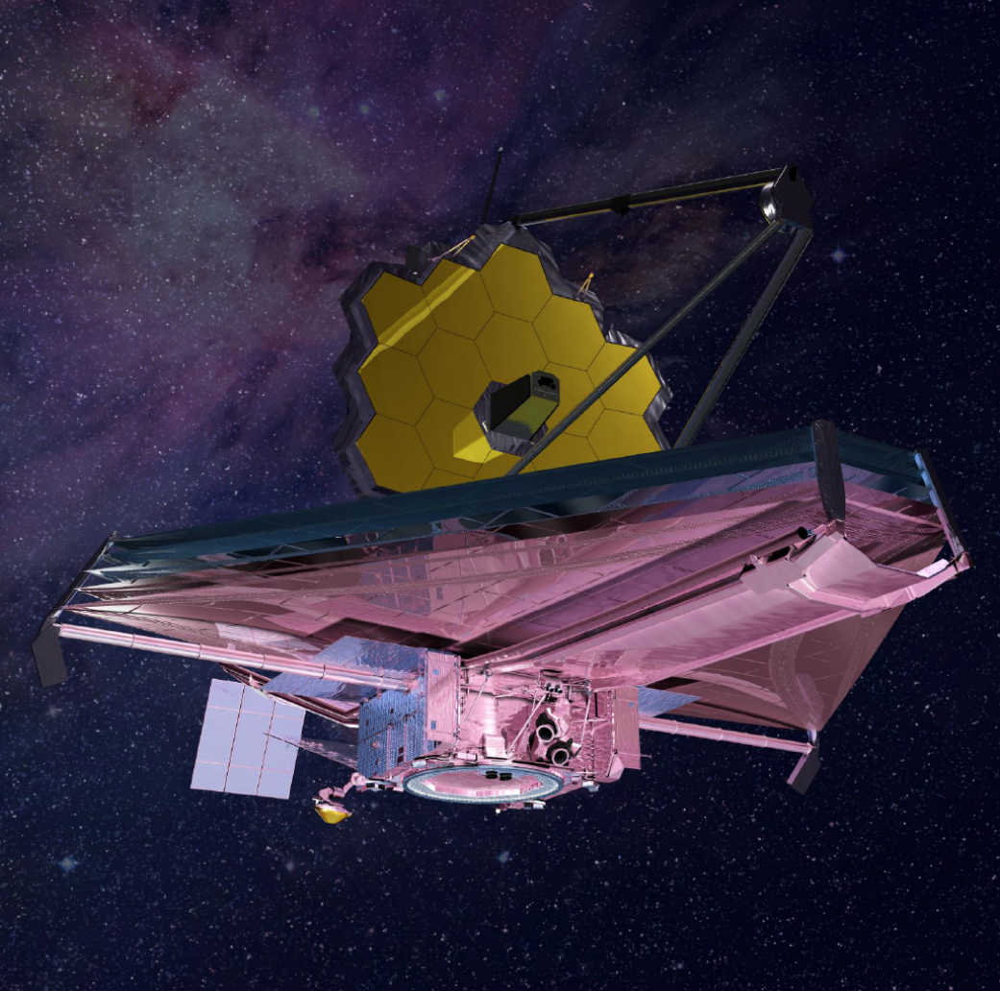
James Webb
Il telescopio infrarosso più potente mai costruito, frutto della collaborazione tra NASA, ESA e agenzia spaziale canadese. Osserva le prime galassie formatesi dopo il Big Bang e analizza le atmosfere di pianeti extrasolari